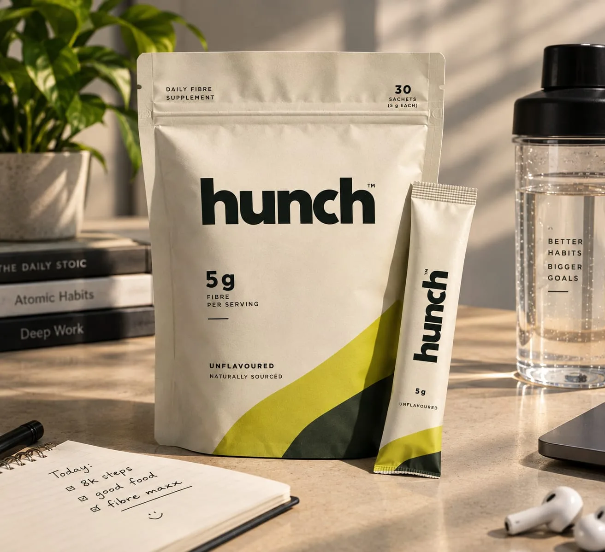
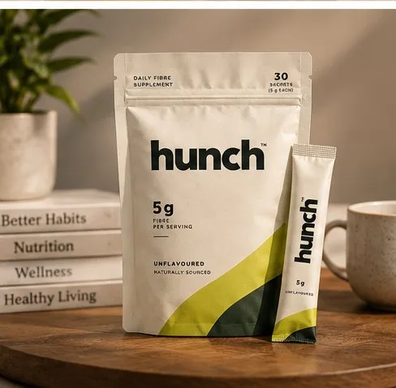
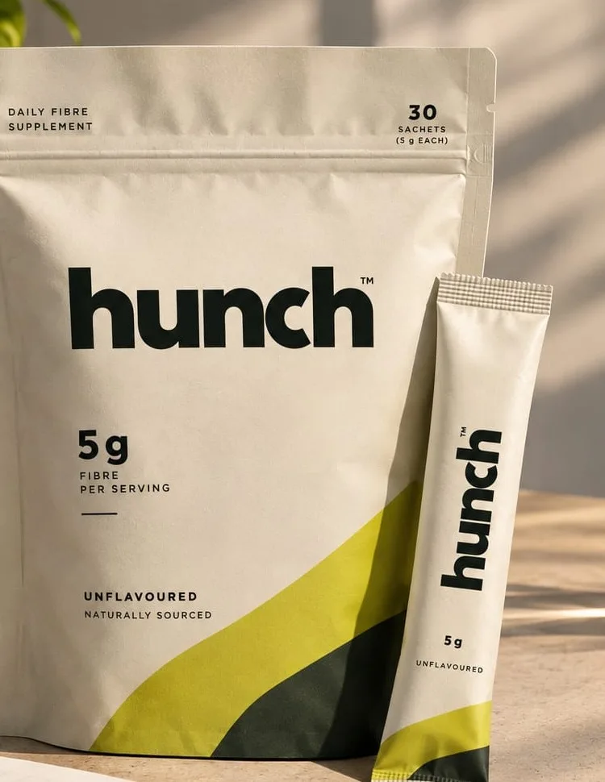

one ingredient,
done right.
A daily psyllium husk fibre supplement.
You track protein, calories and steps.
Fibre is the missing number.

pack shown is a preview.
the gap
your macros are dialed in.
your fibre isn't.
Protein, creatine, timing, macros — all dialed in. Fibre's the one you never touch.
Fewer than 10–15% of adults actually hit that target. Source: peer-reviewed study, PMC, 2026 ↗
That post-workout crash isn't a timing problem. It's a low-fibre blood-sugar spike — and drop.

Fibremaxxing: 0 to 40g overnight — the ego lift of nutrition. hunch is the warm-up set. 5g. One sachet at a time.
You can't out-supplement a fibre deficit.
the fix · flagship release
hunch fibre.
one ingredient. no chaser required.
The one format that fits next to everything else in your bag.
100% husk. Nothing else. One clear job.
- Supports digestive health
- Helps you feel fuller for longer
- Plant-based & unflavoured
Chia and ashwagandha are next in the lineup.
why psyllium, specifically?
Not all fibre is the same. Psyllium is viscous — it gels with water — which is why it's one of the few fibres with an FDA-recognized heart-health claim behind it (7g+/day, as part of a diet low in saturated fat and cholesterol, may reduce coronary heart disease risk) and shown to help regulate blood sugar. That's a US regulatory standard, cited here as the evidence bar psyllium clears — not a claim about this product's regulatory status in India. A lot of fibre supplements use non-gelling types that are milder but have a thinner evidence base and can cause more gas as they ferment. We picked psyllium because the science behind it is the strongest, not because it's the easiest to hide in a drink.
Made in a BRCGS, GMP, and ISO-certified facility.
Psyllium sourced from Unjha, Gujarat — where most of the world's psyllium comes from.
Made in India.

how to use it
- how much 1 sachet
- how to mix Stir into a full glass of water
- when Drink immediately
Drink plenty of water. Don't inhale the powder.
early access
be first to close the gap.
Ships soon. Get notified first — plus early pricing.
one email, when it matters. unsubscribe anytime.
We use your email for launch updates only, and Meta Pixel to measure our ads.
you're on the list.
We'll email you the moment sachets drop.